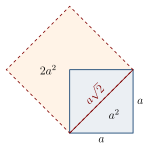
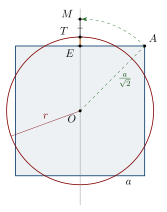

Chapter 2: Early Indian Mathematics: From the Altar to the Arithmetic Book¶
Before the astronomical treatises of the fifth century CE, mathematical knowledge in India is known from scattered but important sources: the number words of the Vedic hymns and ritual texts; the Śulbasūtras, manuals for laying out the fire altars of the Vedic sacrifice; the cosmological texts of the Jains; and the prosody of Piṅgala. The Bakhshālī manuscript, whose date is disputed, may belong to the end of this period or to the centuries after it. This chapter surveys these sources and sets out the debate over the Bakhshālī manuscript in full. Prosody is left to Chapter 8, and the arithmetic books of Śrīdhara and Mahāvīra, which follow the early astronomers, to Chapter 10.
2.1 Number Words in Vedic Literature¶
The Vedic hymns already count in tens. The Ṛgveda (c. 1500–1200 BCE for its core) uses the decimal number words that are still used in Indian languages, and it forms large numbers such as “sixty thousand and ninety-nine” by combining them. Later Vedic texts give lists of names for successive powers of ten. In the Vājasaneyi Saṃhitā (17.2), bricks for the fire altar are addressed with a series of numbers: eka (1), daśa (10), śata (100), sahasra (\(10^3\)), ayuta (\(10^4\)), niyuta (\(10^5\)), prayuta (\(10^6\)), arbuda (\(10^7\)), nyarbuda (\(10^8\)), samudra (\(10^9\)), madhya (\(10^{10}\)), anta (\(10^{11}\)) and parārdha (\(10^{12}\)). Similar lists occur in the Taittirīya Saṃhitā and other texts, sometimes with variations in the names (Datta and Singh 1935; Plofker 2009).
These lists show a decimal way of thinking about number, with a separate name for each power of ten. They are not yet a place-value notation: a number is still expressed by naming its components. Later Buddhist and Jain texts extended the lists enormously. The Lalitavistara, a life of the Buddha, describes the young Bodhisattva naming a series of numbers increasing by factors of a hundred up to a unit of \(10^{53}\), and Jain texts use even larger time-measures. These lists belong to cosmology and religious imagination rather than computation, but they show a culture at ease with very large numbers (Menninger 1969; Ifrah 2000).
2.1.1 Numbers in Vedic ritual and speculation¶
Vedic ritual texts handle numbers with evident care. The seventh book of the Taittirīya Saṃhitā contains formulas for oblations that count through regular sequences of numbers—odd numbers, even numbers, multiples of four and so on—to a hundred and beyond. The Brāhmaṇas use arithmetic to connect the ritual with the structure of time. A well-known passage of the Śatapatha Brāhmaṇa (10.4.2) counts the moments (muhūrta) of a ritual year of 360 days, thirty to a day, as \(360 \times 30 = 10{,}800\), and relates this number to the bricks of the fire altar and to the syllables of the Ṛgveda, which it reckons as \(10{,}800 \times 40 = 432{,}000\). Whatever its ritual meaning, the passage shows easy familiarity with multiplication and division of large numbers. Simple fractions—half (ardha), a quarter (pāda), an eighth and a sixteenth—also occur in Vedic texts, often in connection with shares and measures (Datta and Singh 1935; Plofker 2009).
2.1.2 Calculation as a skill¶
Outside the ritual, calculation appears in early texts as a recognised skill and profession. Lists of arts and crafts in the Pali Canon of the Buddhists include reckoning on the fingers (muddā), calculation (gaṇanā) and computation (saṅkhāna) among the ways of earning a living; the Jain canon lists writing and calculation (lekha, gaṇiya) first among the seventy-two arts. The Hāthīgumphā inscription of King Khāravela of Kaliṅga (perhaps 1st century BCE) records that as a prince he was trained in writing, coinage, calculation and law. The Arthaśāstra, a composite work on statecraft of about 50 BCE–300 CE, describes a royal accounts office in which revenue and expenditure were recorded and audited, and the accountants who worked there. Most of this practical mathematics was transmitted orally and in account books, and little of it survives; but it formed the background from which the arithmetic texts of the first millennium CE emerged.
2.2 The Śulbasūtras: Geometry of the Fire Altar¶
2.2.1 The texts¶
The Śulbasūtras (“rules of the cord”) are sections of the Kalpasūtras, the ritual manuals attached to the different schools of the Veda. They explain how to lay out sacrificial grounds and fire altars of prescribed shapes and sizes with a cord (rajju) and pegs (śaṅku). Four are especially important for mathematics: those of Baudhāyana, Āpastamba, Kātyāyana and the Mānava school; others belong to the Maitrāyaṇa, Vārāha and Vādhūla schools. They are usually dated between c. 800 and 200 BCE. Baudhāyana’s is generally taken to be the oldest and Kātyāyana’s among the latest, but none can be dated precisely, and the material in them is older than the texts in which it was written down (Sen and Bag 1983; Plofker 2009).
The Śulbasūtras were edited and translated by George Thibaut in the 1870s, and by S. N. Sen and A. K. Bag in 1983, whose edition is used here (Thibaut 1875; Sen and Bag 1983).
2.2.2 Units of length¶
The Śulbasūtras measure in units based on the human body. The smallest common unit is the finger-breadth (aṅgula); larger units include the span (prādeśa, 12 aṅgula), the forearm or cubit (aratni, 24 aṅgula), the foot or pace (pada, 15 aṅgula in Baudhāyana), the stride (prakrama, 2 pada), and the height of a man with arms raised (puruṣa, 120 aṅgula). The values of some units differ between texts. All measurements were carried out with a cord marked in these units, so that the geometry of the altar was a geometry of lengths laid out on the ground.
2.2.3 Why the altars needed geometry¶
The Vedic ritual required altars of fixed shape and area, built of bricks in a set number of layers. Three requirements generated geometrical problems:
-
Shapes. The domestic fire (gārhapatya) stood on a round altar and the offering fire (āhavanīya) on a square one of the same area, so a square had to be turned into a circle of equal area and vice versa.
-
Scaling. The great fire altar (agnicayana), in its basic form shaped like a falcon (śyenaciti), had an area of \(7\frac{1}{2}\) square puruṣa (a puruṣa being the height of a man with arms raised). For repeated performances the area was to be increased by one square puruṣa each time while the shape stayed the same. This needs similar figures and square roots.
-
Orientation. Altars and the great sacrificial ground (mahāvedi) had to be laid out with exact east–west lines and right angles. The mahāvedi is an isosceles trapezium 36 units long with an eastern side of 24 and a western side of 30 units, so its area is \(\tfrac{24+30}{2}\times 36 = 972\) square units. Its corners were fixed with cords forming right triangles such as \((15,36,39)\).
2.2.4 The shapes of the altars¶
Besides the falcon, the Śulbasūtras describe altars for special wishes (kāmya citi) in many shapes, each of which had to have the prescribed area: a heron and other birds; an isosceles triangle (praüga) and a rhombus made of two such triangles (ubhayataḥ praüga); a chariot wheel (rathacakra), with or without spokes; a trough (droṇa), square or round; a tortoise (kūrma); and a trapezium shaped like a burial ground (śmaśāna). Each shape posed its own geometrical problem. The triangle and the rhombus require a square to be turned into a triangle or rhombus of equal area; the wheel and the round trough require circle-squaring; the trapezium requires the area of a figure with unequal parallel sides. The bricks themselves came in several standard shapes—squares, rectangles, triangles and others—and the number of bricks in each layer, usually two hundred, and their arrangement were prescribed, so that layout involved counting as well as geometry. The geometry of the Śulbasūtras is thus the geometry of a practical craft, carried out with great precision and with a clear understanding of area and similarity.
2.2.5 The diagonal rule¶
The best-known statement in the Śulbasūtras concerns the diagonal of a rectangle.
Baudhāyana Śulbasūtra 1.48
dīrghacaturaśrasyākṣṇayārajjuḥ pārśvamānī tiryaṅmānī ca
yat pṛthagbhūte kurutas tad ubhayaṃ karoti
“The diagonal cord of a rectangle produces both [the areas] which its length and its breadth produce separately.”
In modern terms: if a rectangle has sides \(a\) and \(b\) and diagonal \(c\), the square on \(c\) equals the sum of the squares on \(a\) and \(b\), \(a^2+b^2=c^2\). An earlier rule (1.45) states the special case of the square: the cord along the diagonal of a square produces an area twice as large (Figure 2.1).
The texts use the rule constructively: to make a square equal to the sum of two squares, take the diagonal of the rectangle whose sides are the sides of the two squares; to make a square equal to the difference of two squares, cut the side of the smaller square from the larger and find the remaining side of the right triangle whose hypotenuse is the larger side. They also list right triangles with whole-number sides, which were useful for fixing right angles with a marked cord. The triples found in Baudhāyana and Āpastamba include
and their multiples. Some, such as \((15,36,39)=3\times(5,12,13)\), are multiples of others.

Historical Note: Pythagoras, Babylon and the Śulbasūtras
The relation \(a^2+b^2=c^2\) is called after Pythagoras (6th century BCE), but the attribution comes from much later Greek writers, and nothing written by Pythagoras survives. The first Greek proof is in Euclid’s Elements (I.47, c. 300 BCE). Long before either, Old Babylonian scribes (c. 1800 BCE) used the relation in calculations: the tablet YBC 7289 gives the diagonal of a square to about six decimal places, and Plimpton 322 tabulates values connected with right triangles. The Śulbasūtras give the earliest known explicit general statement of the rule in words that survives from India, and use it systematically in construction. It is best to treat these as related or independent developments in several cultures, not as a contest for priority (Plofker 2009; Katz 2009).
2.2.6 Transforming figures¶
Much of the Śulbasūtras deals with turning one figure into another of equal area, by cord-and-peg constructions:
-
a rectangle into a square, by cutting off a square from the rectangle, rearranging the remainder as a gnomon around it, and then using the rule for the difference of two squares;
-
a square into a rectangle of given side, an isosceles triangle, or a rhombus;
-
a square into a circle and a circle into a square (below);
-
a figure into a similar figure of larger area, as needed for the enlarged falcon altar.
These constructions are exact, except those involving the circle, which the texts treat with approximations. The Śulbasūtras give rules, not proofs; but the constructions themselves amount to a kind of demonstration, since a figure cut and rearranged visibly keeps its area (Sen and Bag 1983; Sarasvati Amma 1979; Datta 1932).
2.2.7 The diagonal of a square: an approximation to √2¶
Baudhāyana (1.61–62) and Āpastamba give a rule for the diagonal of a square whose side is the unit measure: increase the measure by its third, and this third by its own fourth, less the thirty-fourth part of that fourth. The result is called saviśeṣa, “having something extra”, which shows that the authors knew it was not exact. In modern notation,
while \(\sqrt{2} = 1.4142136\ldots\). The value is too large by about \(2.1\times 10^{-6}\), so it is correct to five decimal places. Several reconstructions of how it might have been obtained have been proposed, some geometrical and some arithmetical. One arithmetical route is the iteration \(x \mapsto \tfrac{1}{2}(x + 2/x)\): starting from \(1\) it gives \(3/2\), \(17/12\) and \(577/408\). Which method the authors used is not known (Datta and Singh 1935; Plofker 2009).
A geometrical reconstruction (after B. Datta)
Bibhutibhusan Datta suggested a construction that follows the wording of the rule closely (Datta 1932).
-
Take two equal unit squares. Divide the second into three strips of width \(\tfrac13\). Place two strips along two adjacent sides of the first square. The figure is now a square of side \(1 + \tfrac13\) with a small square of side \(\tfrac13\) missing at one corner.
-
The third strip remains. Cut it into three small squares of side \(\tfrac13\); one fills the missing corner. Cut the other two into four strips each, of width \(\tfrac{1}{3\cdot 4}\), and place the eight strips around two sides of the figure. It is now very nearly a square of side \(1 + \tfrac13 + \tfrac{1}{3\cdot 4} = \tfrac{17}{12}\), but a tiny square of side \(\tfrac{1}{12}\) is missing at the new corner.
-
The square of side \(\tfrac{17}{12}\) therefore exceeds the two original squares by \(\left(\tfrac{1}{12}\right)^2 = \tfrac{1}{144}\). To remove this excess, cut thin strips of width \(w\) from two sides, so that \(2 \times \tfrac{17}{12}\times w \approx \tfrac{1}{144}\), which gives \(w = \tfrac{1}{408} = \tfrac{1}{3\cdot 4\cdot 34}\).
The side of the corrected square is \(1 + \tfrac13 + \tfrac{1}{3\cdot 4} - \tfrac{1}{3\cdot 4\cdot 34}\), exactly the Śulba rule; and since the removal of the strips itself leaves a tiny overlap of area \(w^2\), the result is slightly too large, as the word saviśeṣa implies.
For laying out an altar the approximation was more than enough. A square altar of twice the area of a given square of side \(a\) is made exactly by taking the diagonal as the new side (Figure 2.1). If the diagonal is instead measured out with the Śulba value, the new area is \(a^2\,(577/408)^2 = 2.0000060\,a^2\), too large by about three parts in a million, far below anything that could be detected with a cord.
2.2.8 Circle and square¶
To turn a square into a circle of equal area, Baudhāyana (1.58) takes half the diagonal as a cord from the centre, and adds to half the side one third of the part of that cord which projects beyond the side. If the side of the square is \(a\), the radius is
The construction is shown in Figure 2.2. Setting \(\pi r^2 = a^2\), it corresponds to \(\pi \approx 3.088\). For the reverse problem, Baudhāyana gives a simple rule—the side of the square is \(13/15\) of the diameter of the circle—which corresponds to \(\pi \approx 3.004\), and a more elaborate one, side \(= d\left(1 - \frac{1}{8} + \frac{1}{8\cdot 29} - \frac{1}{8\cdot 29\cdot 6} + \frac{1}{8\cdot 29\cdot 6\cdot 8}\right)\), which is very nearly the inverse of the first rule and also corresponds to \(\pi\approx 3.088\). The Śulbasūtras do not use a constant ratio of circumference to diameter; the values of \(\pi\) are modern deductions from their rules, and they show that the circle was treated by approximation (Sen and Bag 1983; Plofker 2009).

2.2.9 Orientation and right angles¶
Before any altar could be built, the ground had to be oriented. Kātyāyana describes how to find the east–west line: set up a gnomon on level ground, draw a circle around it with a cord, and mark the two points where the tip of the gnomon’s shadow touches the circle in the morning and in the afternoon; the line joining them runs east–west. The north–south line is then found as the perpendicular bisector of a segment of this line, by drawing two arcs of equal radius from its ends and joining their intersections.
Right angles could also be fixed with a cord. A cord whose length is the sum of the sides of a right triangle with whole-number sides, such as \(5 + 12 + 13 = 30\) units, is marked at the two points dividing it into the three sides. With its ends fastened at two pegs a given distance apart and the cord stretched by the marked points, the corner at which the two shorter sides meet is a right angle. The Śulbasūtras describe several variants of this procedure, using different triples and different ways of folding and marking the cord (Sen and Bag 1983).
2.2.10 Multiplying a square¶
The rules for adding squares make it possible to construct a square equal to any whole number of times a given square, by adding one square after another. Kātyāyana gives a quicker rule. To make a square \(n\) times a given square of side \(a\), lay down a base of length \((n-1)a\); fasten the ends of a cord of length \((n+1)a\) to the ends of the base and stretch the cord by its midpoint, so that it forms the two equal sides, each \(\tfrac{n+1}{2}a\), of an isosceles triangle. The altitude of this triangle is the side of the required square. In modern terms the altitude is
The same rule works for any number \(n\), not only for whole numbers, and it gives a simple construction for the side of a square of any prescribed area.
Worked example: enlarging the falcon altar
The basic falcon altar has an area of \(7\tfrac12\) square puruṣa. For the next performance its area is to be \(8\tfrac12\) square puruṣa, with the same shape. Every length in the altar must therefore be multiplied by
The Śulbasūtras solve such problems geometrically rather than by computing square roots: with constructions of the kind just described, a new unit of length is made whose square is \(17/15\) of the old unit square, and the whole altar is then laid out again with the new unit. Every length in the design is thereby enlarged in the ratio \(\sqrt{17/15}\), and the shape is preserved.
Worked example: a rectangle turned into a square
To turn a rectangle with sides \(a = 9\) and \(b = 4\) units into a square of equal area, cut off a square of side 4 from the rectangle, leaving a strip \(5 \times 4\); cut the strip in half lengthwise and place the two halves, each \(2\tfrac12 \times 4\), along two sides of the square. The result is a square of side \(6\tfrac12\) with a small square of side \(2\tfrac12\) missing from one corner. The required square is the difference of these two squares, and its side is found by the rule for the difference of squares:
Indeed \(9 \times 4 = 36 = 6^2\). In general the construction gives
2.3 Mathematics in Jain Texts¶
The Jain canon and its commentaries contain a body of mathematics developed in the service of cosmology. Their dates are difficult: the canonical texts were fixed in writing at the council of Valabhī in the fifth century CE, but contain older material, and the commentaries run from the early centuries CE to the medieval period. A pioneering survey was made by Bibhutibhushan Datta in 1929 (Datta 1929; Plofker 2009).
2.3.1 Circles and the measure of the world¶
Jain cosmology places at the centre of the world a circular continent, Jambūdvīpa, with a diameter of 100,000 yojanas. The texts compute its circumference, the areas and arcs of its regions, and the chords and arrows of segments cut off by mountain ranges. They use the value \(\sqrt{10}\) for the ratio of circumference to diameter: the circumference of Jambūdvīpa is given as a little over 316,227 yojanas, and \(\sqrt{10}\times 100{,}000 = 316{,}227.8\). Rules for the arc \(s\) and height \(h\) of a segment with chord \(c\), equivalent to
are found in Umāsvāti’s Tattvārthādhigamabhāṣya and in the cosmological texts. The same texts relate chord, arrow and diameter \(d\) by rules equivalent to
The value \(\sqrt{10}\) remained in use for centuries; Brahmagupta later called it the “accurate” value (Datta 1929; Datta and Singh 1935).
Worked example: a segment of a circle
In a circle of diameter \(d = 10\), a segment has arrow \(h = 2\). The chord is \(c = \sqrt{4 \cdot 2 \cdot 8} = 8\), and the Jain rule gives the arc as \(\sqrt{6\cdot 2^2 + 8^2} = \sqrt{88} \approx 9.38\). The true arc is \(10 \arcsin(0.8) \approx 9.27\), so the rule is too large by a little over one per cent—good enough for the purposes of cosmography.
Worked example: the area of Jambūdvīpa
The Jain texts take the area of a circle as one quarter of the circumference multiplied by the diameter. For Jambūdvīpa, with \(d = 100{,}000\) yojanas and \(C = \sqrt{10}\,d \approx 316{,}227.77\),
With the modern value of \(\pi\) the area would be \(\pi \times 50{,}000^2 \approx 7{,}853{,}981{,}634\), about two-thirds of one per cent less. The cosmological texts carry such results down to fractions of a yojana, which requires the extraction of large square roots with great care.
The Jain treatment of number, of the cosmic unit of length (rajju) and of the shape and volume of the universe is described more fully in Volume 4 of this series, Buddha–Jina Prabhā, Chapter 10 (“Mathematics in the Jain Tradition”).
2.3.2 Numerable, innumerable and infinite¶
The Anuyogadvārasūtra, a canonical Jain text, classifies numbers into three kinds: the numerable (saṃkhyāta), the innumerable (asaṃkhyāta) and the infinite (ananta). Each is divided into lowest, intermediate and highest grades, and the innumerable and infinite are further divided into “limited” (parīta), “unified” (yukta) and “doubly” innumerable or infinite (asaṃkhyāta-asaṃkhyāta, ananta-ananta). The higher grades are defined by thought-experiments: a vast cylindrical pit of the size of Jambūdvīpa is filled with mustard seeds, the seeds are dropped one by one into successive islands and oceans, and the process is repeated. The highest numerable number is reached only after such a procedure; the innumerable and infinite lie beyond it. Infinite quantities were needed in Jain thought because the number of souls, of atoms and of moments of time was held to be without end (Datta 1929; Plofker 2009).
2.3.3 Measures of time and space¶
Jain cosmology required units far beyond those of everyday life. Long periods of time were measured by thought-experiments: a “pit-measure” (palyopama) is the time needed to empty a vast pit packed with fine hairs if one hair is removed every hundred years, and an “ocean-measure” (sāgaropama) is ten koṭi-koṭi (ten times \(10^7 \times 10^7\)) of these. Another series of time-units grows by repeated multiplication by \(8{,}400{,}000\): a pūrvāṅga is \(8{,}400{,}000\) years and a pūrva is \(8{,}400{,}000\) pūrvāṅgas, that is \(70{,}560{,}000{,}000{,}000\) years, and the series continues through many further names to numbers of nearly two hundred digits. Distances were measured in yojanas and, for the whole universe, in the rajju, a unit so large that the inhabited world is a small part of it. These numbers belong to religious cosmology, not to observation, but they required and encouraged the manipulation of very large quantities, and the commentators worked out their arithmetic in detail (Datta 1929; Plofker 2009).
Some modern writers compare the Jain grades of infinity with Georg Cantor’s theory of transfinite cardinal numbers (1874 onwards) and say that the Jains “anticipated” it. The comparison is loose. Cantor’s theory rests on one-to-one correspondence between infinite sets and on proofs, such as the diagonal argument, that some infinite sets are larger than others. The Jain classification ranks quantities defined by cosmological procedures; it shows a remarkable readiness to speak of different orders of the infinite, but it does not contain Cantor’s concepts or results.
2.3.4 Halving and doubling¶
The commentary Dhavalā of Vīrasena (completed 816 CE) on the Jain Ṣaṭkhaṇḍāgama uses the notion of ardhaccheda, the number of times a quantity can be halved, and related notions for division by three and by four. Rules stated in terms of these notions correspond to the modern laws \(\log_2(ab)=\log_2 a+\log_2 b\) and \(\log_2(a/b) = \log_2 a - \log_2 b\) for powers of two. The concept is a counting device for very large quantities; it is not a theory of logarithms in the sense of Napier (1614), whose purpose was to simplify multiplication of arbitrary numbers by tables (Datta 1929).
2.4 The Bakhshālī Manuscript¶
2.4.1 Discovery and contents¶
In 1881 a farmer digging near the village of Bakhshālī, near Mardan in what is now Khyber Pakhtunkhwa, Pakistan, found about seventy fragmentary leaves of birch bark covered in writing in the Śāradā script. The manuscript passed to the Indologist A. F. R. Hoernle and is now in the Bodleian Library, Oxford. It is a mathematical text written in a non-standard Sanskrit, consisting of rules in verse, worked examples and solutions. G. R. Kaye published a facsimile and study in 1927–33, and Takao Hayashi produced a full edition, translation and commentary in 1995 (Hayashi 1995).
It is among the oldest surviving manuscripts of Indian mathematics, although how old is disputed (below). Its notation is of special interest. Numbers are written with the decimal place-value numerals, and a dot is used for zero; the same dot also marks an unknown quantity. Fractions are written with one number above the other, without a bar. A sign like a cross written after a number shows that it is to be subtracted (that is, it is negative). The problems include linear equations and systems of equations, quadratic equations, arithmetic progressions, problems of profit and loss, and the extraction of approximate square roots. The worked examples follow a regular pattern: the rule (sūtra), the example (udāharaṇa), the setting down of the data, the computation, and often a verification (pratyaya) in which the answer is substituted back into the conditions of the problem. This habit of checking results is one of the earliest documented forms of mathematical justification in India (Hayashi 1995).
Mathematical Result: The Bakhshālī square-root rule
For a non-square number \(N\), write \(N = a^2 + r\) with \(a^2\) a nearby square. The manuscript’s rule is equivalent to
Example. For \(N=41\), take \(a=6\), \(r=5\). Then \(\tfrac{r}{2a}=\tfrac{5}{12}\) and
while \(\sqrt{41} = 6.403124\ldots\); the error is about \(1.5\times 10^{-5}\). The result is the same as two steps of the familiar iteration \(x\mapsto \tfrac{1}{2}(x+N/x)\) starting from \(a\).
2.4.2 The dating debate¶
The date of the Bakhshālī manuscript, and of the work it contains, has been disputed since its discovery.
Historical Note: Dating the Bakhshālī manuscript
-
Hoernle (1880s) placed the composition of the work in the early centuries CE.
-
Kaye (1927) dated the manuscript to the twelfth century and considered the work late.
-
Hayashi (1995), from the script, the language and the mathematical content, dated the composition of the work to about the seventh century CE, and the manuscript itself to a somewhat later period (roughly eighth to twelfth century).
-
Radiocarbon (Bodleian Library, 2017). Samples from three folios gave calibrated date ranges of CE 224–383 (folio 16), CE 680–779 (folio 17) and CE 885–993 (folio 33). The announcement was widely reported as showing that the manuscript contains “the earliest recorded zero”, from the third or fourth century.
-
Response (2017). Kim Plofker, Agathe Keller, Takao Hayashi, Clemency Montelle and Dominik Wujastyk pointed out that the manuscript is a single, coherent work copied by a small number of scribes, so that leaves written five or six centuries apart would be very hard to explain; they asked for the methods and data of the dating to be published and for further tests, and noted that radiocarbon dates the birch bark, not the writing.
The question is therefore open. The manuscript shows the place-value system with a dot for zero in use in north-western India; it does not, on present evidence, establish that zero was in use in the third century (Plofker et al. 2017; Hayashi 1995; Plofker 2009).
2.5 Towards the Arithmetic Books¶
From the eighth century onward, texts devoted entirely to arithmetic and mensuration appear alongside the astronomical treatises, written for students of astronomy and also for merchants, officials and surveyors. The Bakhshālī manuscript, if Hayashi’s dating is right, stands at the head of this genre, and it was continued by Śrīdhara (c. 750, uncertain) and by the Jain Mahāvīra, whose Gaṇitasārasaṅgraha (c. 850) is the largest of the early arithmetic books. Because these works belong after Āryabhaṭa and Brahmagupta, and because their rules are best read together with the later books that drew on them, they are treated in full in Chapter 10, and their commercial and building problems in Chapter 11. The number-lore of the Jain canon described above is one of their sources: Mahāvīra’s Gaṇitasārasaṅgraha still uses the Jain value \(\sqrt{10}\) for its “accurate” circle.
2.6 Summary¶
What these sources have in common is that their mathematics was done for a purpose outside mathematics—the altar, the cosmos, the calendar—and yet reached results of real generality. The altar-builders needed areas that could be doubled and figures that kept their shape when enlarged, and so arrived at the diagonal rule in general form, a value of \(\sqrt{2}\) good to five decimal places, and exact transformations of figures. The Jain cosmographers needed the arcs and areas of a world of fixed dimensions, and in describing its time-scales came to speak of different orders of the infinite. The Bakhshālī manuscript, whatever its date, shows the next stage: a written arithmetic with place-value numerals and zero, in which a rule, a worked example and a check go together.
Exercises¶
-
Using the Śulba value \(577/408\) for \(\sqrt{2}\), compute the diagonal of a square of side 12, and compare it with the true value.
-
Use Kātyāyana’s rule to construct the side of a square three times as large as a square of side 1. What are the sides of the isosceles triangle?
-
By Baudhāyana’s rule, find the radius of the circle equal in area to a square of side 10. What is the area of that circle with the true value of \(\pi\)?
-
Turn a rectangle of sides 16 and 9 into a square of equal area by the Śulba method, and find the side.
-
In a circle of diameter 100, a segment has arrow 10. Find its chord by the Jain rule, and its arc by the rule \(\sqrt{6h^2 + c^2}\). Compare with the true arc.
-
Use the Bakhshālī rule with \(a = 10\) to find \(\sqrt{105}\).
Answers. (1) \(12 \times 577/408 = 16.97059\); true value \(16.97056\). (2) A base of length 2 and a cord of length 4 stretched into two equal sides of 2; the altitude is \(\sqrt{4 - 1} = \sqrt{3}\). (3) \(r = 10(2+\sqrt2)/6 \approx 5.690\); area \(\approx 101.7\), about 1.7% too large. (4) Side 12. (5) Chord \(\sqrt{4\cdot 10\cdot 90} = 60\); arc by the rule \(\sqrt{600 + 3600} \approx 64.81\); true arc \(100\arcsin 0.6 \approx 64.35\). (6) \(10 + \frac{5}{20} - \frac{(1/4)^2}{2 \times 10.25} \approx 10.246951\); true value \(10.246951\).
Scholarly Note: Further reading
For the Śulbasūtras: Sen and Bag (1983), with text, translation and commentary; Sarasvati Amma (1979), chapters 1–2; Plofker (2009), chapter 2. For Jain mathematics: Datta (1929) and Plofker (2009), chapter 3. For the Bakhshālī manuscript: Hayashi (1995) and, on the dating controversy, Plofker, Keller, Hayashi, Montelle and Wujastyk (2017) (Sen and Bag 1983; Sarasvati Amma 1979; Datta 1929; Hayashi 1995; Plofker et al. 2017).